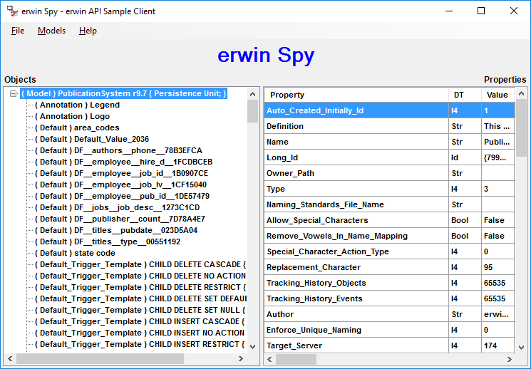
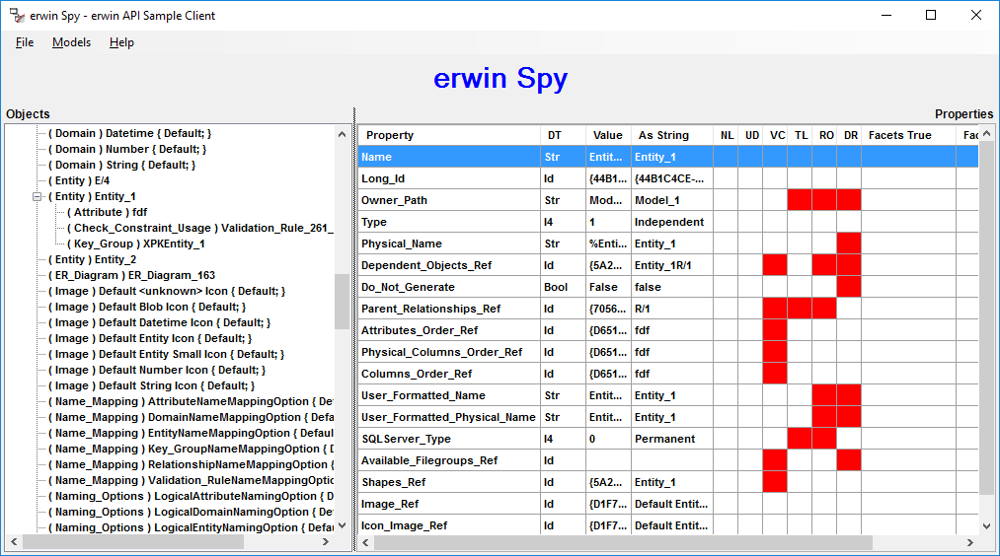
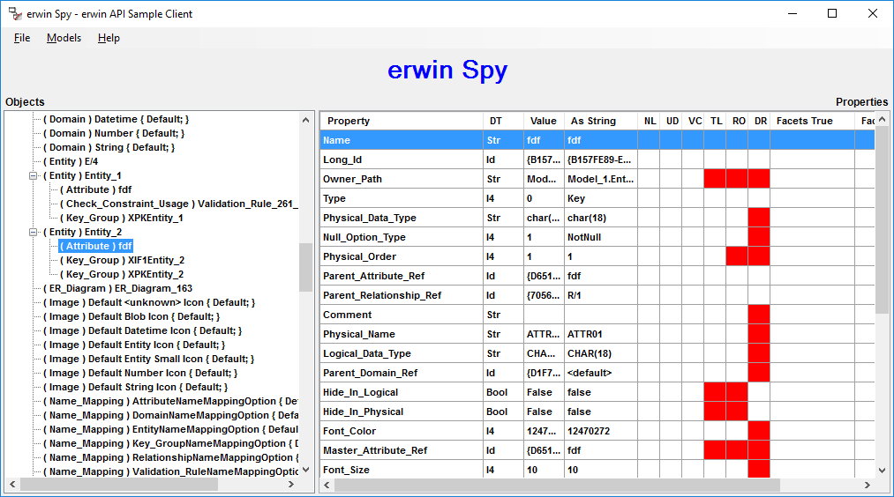
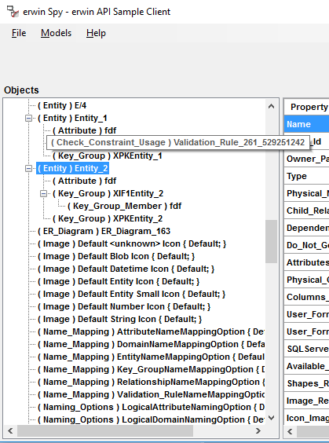

To see how erwin Spy can help you visualize metadata information, do the following:
Ensure that you have added the erwin Spy application as a erwin DM add-in application on the Tools, Add-Ins menu. See the Add-In Manager online help for more information on defining an add-in software application.

There are many objects listed by erwin Spy. Even though the model is empty, you still see objects there that represent erwin DM defaults, such as Domains, Main Subject Area, Trigger Templates, and so on. All default objects are marked with a { Default; } flag to the right of the type of the model object.
The right pane of erwin Spy displays object properties. To see a specific object's properties, select the object, click the button located in the center of the screen, and the selected object's properties display in the right panel. The following illustration shows the properties of a specific entity that was added to this model:

The first column shows property names, such as Name, Long ID, Type, Physical Name, and so on.
The second column, DT, shows property datatypes, such as Str for a string, I4 for a number, Bool for Boolean, Id for a reference to another object, and so on.
The third column, Value, displays the property value in native format.
The fourth column, As String, displays the property value reinterpreted as a string. To understand this better, look at Physical Name in the left column. Its value in the Value column is %EntityName(), which is a macro, while As String holds the macro expansion, Entity_1.
The rest of the columns in the right pane represent property flags. The following list describes the meaning of these columns:
Displays properties with NULL/no value.
The flag is never on for erwin Spy.
Displays user-defined properties.
Displays vector properties.
Displays properties that are maintained by erwin DM and that cannot be changed directly using the API.
Displays read-only properties.
Displays derived properties whose value was inherited (from a parent domain, for example).
Displays the facet value of a property that is set to True.
Displays the facet value of a property that is set to False.
In the previous illustration, a primary key attribute named ATTR01 was added to Entity_1. It was migrated to Entity_2 by creating an identifying relationship. When you double-click Entity_2, and then select ATTR01, you can see how erwin Spy displays the information. You can click the button in the center of the screen to view its properties on the right.

Since the attribute for the Parent_Relationship_Ref property is a product of foreign key migration, this property shows which relationship object is used to store data about it. The value Id in the DT column shows that the property is a reference, which means that the value is a unique ID of the involved relationship object.
Look at the name in the As String column or locate an object by its unique ID to traverse back to the relationship object. To see object IDs, click Show Ids on the File, Options menu. With this option enabled, when the cursor is positioned over an object in the left panel, that object's unique ID is displayed in a popup window, as shown in the following illustration:

Now compare the Parent_Relationship_Ref property with the Parent_Attribute_Ref and the Master_Attribute_Ref properties. The Master_Attribute_Ref property is read-only. This means that it is displayed for informational purposes only and cannot be changed using the API. As you build your model, you can expand objects in the model to see how erwin DM uses their properties to represent different relationships in the model.
Use the erwin Spy utility to see and understand the details of the data in a erwin DM model that is available through the API. If you need to learn how particular data is represented in a erwin DM model, you can use the scenarios that were just described. Start with an empty model, create the minimum model that is necessary to represent the feature in question, and then use erwin Spy to look at the details of the data representation.